📖 Lời cảm tạ & Lời tựa chuyên môn
📖 Lời tựa từ các chuyên gia giáo dục thể chất
Cuốn sách 'Advanced Tennis for Coaches, Teachers and Players' của tác giả Gundars Tilmanis đã lấp đầy một khoảng trống học thuật lớn đã tồn tại từ lâu trong các tài liệu giảng dạy quần vợt thế giới.
Quá nhiều sách hướng dẫn quần vợt trước đây chỉ đơn thuần mô tả động tác một cách hời hợt theo kinh nghiệm cảm tính mà không giải thích được bản chất cơ sinh học (biomechanics) đằng sau mỗi chuyển động. Cuốn sách này là một công trình khoa học ứng dụng xuất sắc, kết hợp nhuần nhuyễn giữa kiến thức cơ học giải phẫu học hiện đại và thực tiễn huấn luyện trên sân đấu.
Tác giả phân tích cặn kẽ từng nguyên lý vật lý chi phối đường bay của bóng: quán tính, sự chuyển dịch trọng tâm, chuỗi đòn bẩy cơ thể, góc phản xạ và hiệu ứng khí động học Magnus của các loại xoáy. Đây là cuốn cẩm nang gối đầu giường không thể thiếu đối với mọi huấn luyện viên, giáo viên thể chất và các đấu thủ khao khát nắm giữ chiếc chìa khóa khoa học để làm chủ môn thể thao này.
🔬 Chương 1: Nguyên lý cơ sinh học ứng dụng trong quần vợt (The Biomechanical Principles)
1. Từ bỏ phương pháp 'Dạy vẹt': Dạy người chơi hiểu lý do (Why) đằng sau mỗi động tác
Trong nhiều thập kỷ, các huấn luyện viên truyền thống thường gò ép học viên theo những khuôn mẫu cổ điển một cách máy móc: 'Đặt chân trái cách chân phải 45 centimet; mũi chân hướng về cái cây; xoay người góc này; bước chân góc kia'. Học viên học các kỹ năng quần vợt theo lối học vẹt mà không hề hiểu được bản chất vật lý vì sao mình phải làm như vậy.
Hậu quả là khi bước vào thi đấu thực tế, nơi quả bóng bay tới với muôn vàn tốc độ và quỹ đạo khác nhau, người chơi hoàn toàn bị bỡ ngỡ và mất phương hướng. Cây vợt trên tay họ trở nên vô dụng như thể không có dây. Môi trường huấn luyện sẽ trở nên vô nghĩa nếu câu hỏi duy nhất mà học viên đặt ra sau buổi tập là 'Bao đựng vợt của em để ở đâu?'.
Huấn luyện viên hiện đại phải kích thích tư duy của học trò bằng phương pháp giải quyết vấn đề (problem-solving approach). Hãy giúp họ hiểu nguyên lý sinh lực: tại sao đưa vợt ra sau quá cao trên sân cỏ sẽ dẫn đến cú chém bóng rúc lưới; tại sao tiếp xúc bóng trước người lại tạo lực đánh thẳng xuyên sân. Khi người chơi hiểu được bản chất cơ học, họ sẽ có năng lực tự điều chỉnh (self-correct) và tiến bộ không ngừng ngay cả khi tự tập luyện một mình.
2. Tư thế sẵn sàng (The Ready Position): Tối ưu hóa trọng tâm và độ ổn định
Một tư thế sẵn sàng chuẩn xác đòi hỏi sự cân bằng hoàn hảo giữa tính ổn định (stability) và khả năng kích hoạt di chuyển tức thời (mobility). Trọng tâm cơ thể con người nằm ở vùng hông; để có tư thế thư thái không tốn sức thừa, trọng tâm phải rơi thẳng đứng bên trong vùng chân đế nâng đỡ.
Các yếu tố cơ học cốt lõi của tư thế sẵn sàng:
Thứ nhất, hai bàn chân mở rộng hơn chiều rộng của vai một chút, trọng lượng cơ thể dồn lên phần nửa trước và mép trong của hai bàn chân để gót chân hơi nhấc nhẹ, tạo bàn đạp vững chắc không bị trượt trên mặt sân.
Thứ hai, hai đầu gối khuỵu nhẹ, tuyệt đối tránh đứng thẳng đuột hai chân vì khớp gối thẳng sẽ khóa chặt khả năng bứt tốc.
Thứ ba, nguyên lý mất thăng bằng có kiểm soát: Trọng tâm càng gần mép chân đế nâng đỡ thì độ ổn định càng giảm, nhưng tốc độ bứt tốc theo hướng mất thăng bằng đó lại càng nhanh. Việc hơi nghiêng thân trên về phía trước cho phép đấu thủ lao vào đón bóng sớm hơn một phần mười giây.
Thứ tư, tay trái đỡ lấy cổ vợt ở tầm ngang ngực để giảm tải trọng cho tay phải, giữ đầu vợt hướng lên trên sẵn sàng xoay vai sang cả hai bên cánh.
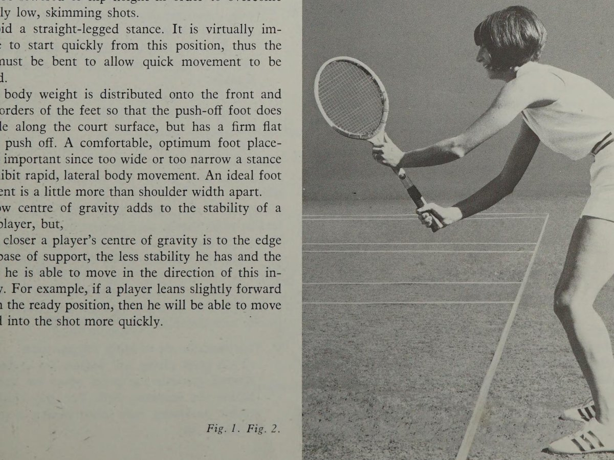
3. Định hướng không gian (Orientation) và Nghệ thuật đọc tình huống sớm
Một sai lầm kinh điển của người mới chơi là chạy thẳng tới điểm bóng rơi rồi mới cuống cuồng mở vợt, dẫn đến việc bị bóng đè sát người và phải đánh bóng khi trọng tâm đang ngả ra sau. Đấu thủ có nhãn quan bậc thầy luôn di chuyển tới vị trí phía sau và hơi lệch sang một bên của điểm bóng nảy, đón bóng ở đỉnh điểm nảy (top of the bounce) ở cự ly cách thân người vừa tầm một cánh tay duỗi.
Đối với một tay vợt đẳng cấp nâng cao, phần quan trọng nhất của một pha bóng là những mét đầu tiên quả bóng bay ra từ mặt vợt của đối phương, chứ không phải là mét cuối cùng trước khi bóng chạm vào vợt mình. Hãy đọc các tín hiệu cơ thể của đối thủ:
Về tốc độ: Một đà mở vợt khổng lồ kết hợp nghiến chặt răng và cắm chặt chân sau báo hiệu một cú bắn phá sấm sét.
Về hướng đánh: Tư thế đứng mở rộng (open stance) thường báo hiệu cú đánh chéo sân, trong khi thế đứng đóng với điểm tiếp xúc muộn thường là cú đánh dọc dây hoặc quả lốp.
Về độ xoáy: Đầu vợt hạ thấp dưới bóng rồi vuốt cuộn lên trên sẽ tạo xoáy topspin; mặt vợt mở ngửa đón bóng báo hiệu cú cắt slice hoặc quả lốp sâu.
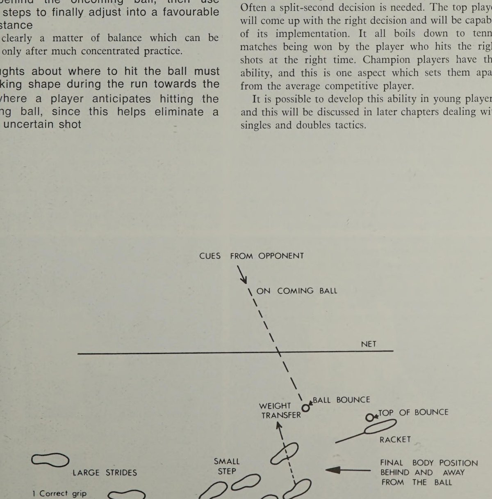
4. Hiệu ứng Magnus và Quy luật nảy của các loại xoáy (The Effects of Spin)
Khi một quả bóng tennis xoay tròn trong không khí, sự chênh lệch áp suất không khí giữa hai mặt của quả bóng theo Định luật Bernoulli tạo ra Lực Magnus làm bẻ cong quỹ đạo bay của nó:
Xoáy cuộn Topspin: Quả bóng xoay về phía trước làm không khí phía trên chuyển động ngược chiều (áp suất cao) và không khí phía dưới chuyển động cùng chiều (áp suất thấp). Lực ép hướng xuống kéo quả bóng cắm chúi nhanh xuống sân. Khi chạm đất, quả bóng nảy vọt về phía trước và bốc cao ngang vai, đẩy đối thủ lùi sâu.
Xoáy lùi Backspin / Underspin: Quả bóng xoay ngược về sau tạo lực nâng khí động học giúp bóng bay bổng lâu hơn và lướt là là mặt lưới. Khi chạm đất, ma sát mặt sân hãm tốc độ tiến của bóng khiến bóng trượt thấp sát mặt đất (skidding), buộc đối thủ phải cúi gập người vất vả nâng bóng.
Xoáy ngang Sidespin: Làm quả bóng lượn cong sang một bên trên không trung và nảy giật góc bất ngờ sau khi chạm đất, gây rối loạn khả năng ước lượng cự ly của người đón bóng.
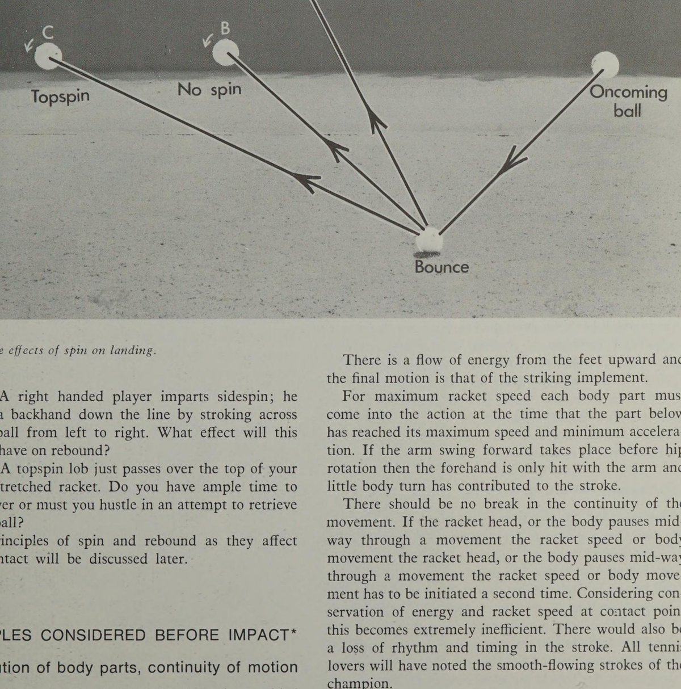
🎓 Chương 2: Phương pháp luận sư phạm, quản lý lớp học và kỷ luật (Coaching Methodology)
1. Tính chuẩn xác và ý nghĩa trong lời chỉ dẫn của huấn luyện viên
Những câu cảm thán sáo rỗng như 'Kém may mắn quá!', 'Chú ý bộ chân!' hoàn toàn vô nghĩa đối với một học viên trẻ đang loay hoay trên sân. Lời chỉ dẫn sư phạm phải mang tính cụ thể, hành động được và giàu hình tượng.
Thay vì nói 'Đánh hỏng rồi', hãy chỉ dẫn: 'Hãy để tay trái giữ cổ vợt đưa ra sau giúp thân người cuộn chặt sang tư thế nghiêng vai (curl), từ đó giải phóng toàn bộ lực xoay của thân trên'. Những từ khóa gợi mở (cue words) như 'cuộn', 'bật', 'quất' giúp học viên cảm nhận được chuyển động cơ bắp một cách trực quan và sinh động nhất.
2. Tổ chức đội hình và quản lý an toàn trong lớp học quần vợt
Khi giảng dạy cho các nhóm đông học viên, an toàn và thời gian tiếp xúc bóng (ball contact time) là hai thước đo hàng đầu của một buổi học thành công. Việc để học viên đứng xếp hàng dài chờ đợi đánh một quả bóng là biểu hiện của một giáo án yếu kém.
Huấn luyện viên phải chia sân thành các khu vực hoạt động đồng thời (station work): nhóm tập kỹ thuật với huấn luyện viên, nhóm tập phối hợp tay-mắt ở khu vực vạch cuối sân, và nhóm tập thể lực bổ trợ. Bố trí khoảng cách an toàn tối thiểu giữa các vị trí vung vợt để triệt tiêu mọi nguy cơ va chạm gây chấn thương.
🎾 Chương 3: Các hoạt động và bài tập bổ trợ cho người mới (Activities for Beginners)
1. Xây dựng sự tự tin phối hợp tay - mắt (Hand-Eye Confidence)
Trước khi một đứa trẻ hoặc người mới chơi học cách vung vợt phức tạp, điều cốt yếu là họ phải phát triển được sự tự tin trong việc cảm nhận quả bóng. Các bài tập ném bắt bóng bằng hai tay ở các cự ly khác nhau, bài tập đập bóng nảy xuống đất và đón bóng trên không giúp hình thành sự phối hợp nhịp nhàng giữa thị giác và các khớp ngón tay.
Huấn luyện viên nên sử dụng các bài tập bắt bóng bằng nón hoặc rổ nhỏ để rèn luyện khả năng phán đoán điểm rơi chính xác, giúp người học không bị hoảng sợ trước tốc độ bay của bóng.
2. Cảm thụ không gian và cự ly tiếp xúc (Depth Perception)
Khả năng ước lượng cự ly ba chiều (depth perception) là nền tảng để không bị đánh bóng quá gần người hoặc với tay quá xa. Các bài tập di chuyển luồn cọc tiêu kết hợp đón bóng nảy ở các độ cao khác nhau sẽ rèn luyện khả năng di chuyển linh hoạt của đôi chân xung quanh quỹ đạo bay của quả bóng.
🏃 Chương 4: Huấn luyện thể lực nâng cao trong quần vợt (Advanced Physical Fitness)
1. Bốn lĩnh vực thể chất sống còn của đấu thủ quần vợt
Để xây dựng một chương trình rèn luyện thể lực khoa học, huấn luyện viên phải phân tích bốn trụ cột thể chất chuyên biệt cho quần vợt:
Thứ nhất, Sức mạnh bộc phát và Khả năng tăng tốc (Power & Explosiveness): Khả năng bật nhảy đạp chân phát lực giao bóng và những pha bứt tốc chớp nhoáng 3-5 mét đầu tiên.
Thứ hai, Sự nhanh nhẹn và Khả năng hãm phanh chuyển hướng (Agility & Deceleration): Đấu thủ không chỉ cần chạy nhanh tới bóng mà quan trọng hơn là khả năng hãm phanh quán tính đột ngột, giữ vững thăng bằng để đánh bóng rồi lập tức đẩy trọng tâm quay trở lại vị trí trung tâm.
Thứ ba, Sức bền yếm khí và hiếu khí hỗn hợp (Anaerobic & Aerobic Endurance): Khả năng duy trì cường độ thi đấu đỉnh cao qua hàng trăm loạt bóng bền kéo dài suốt 3 đến 5 set đấu mà không bị suy giảm độ chuẩn xác của cú đánh.
Thứ tư, Độ linh hoạt và Sự thăng bằng động (Flexibility & Dynamic Balance): Tầm vận động linh hoạt của khớp vai, khớp háng và cột sống giúp thực hiện những cú cứu bóng dạt biên mà không gặp chấn thương rách cơ.
2. Các bài tập thể lực chuyên biệt trên sân đấu
Bài tập chạy hình quạt (Fan Drill): Đấu thủ xuất phát từ tâm vạch cuối sân, lần lượt bứt tốc chạm vợt vào 5 điểm chiến lược trên sân (góc lưới trái, điểm giữa lưới, góc lưới phải, góc biên phải, góc biên trái) rồi lùi về tâm sân. Bài tập này mô phỏng hoàn hảo mọi hướng di chuyển thực chiến.
Bài tập di chuyển zic-zac bóng chạm đất: Rèn luyện khả năng hạ thấp trọng tâm và chuyển dịch bước chân nhỏ (adjustment steps) trước khi phát lực.
🎯 Chương 5: Chiến thuật đánh đơn toàn diện (Singles Tactics)
1. Chiến thuật giao bóng đơn: Tấn công có chủ đích
Trong đánh đơn, quả giao bóng phải được xem như bước mở màn để đưa trận đấu vào kịch bản có lợi nhất cho bạn. Đừng giao bóng một cách vô thức.
Hãy xác định rõ ý đồ chiến thuật: Giao bóng chém góc rộng (wide) để kéo đối phương ra khỏi sân, mở toang khoảng trống sân bên kia; hoặc giao bóng cắm trung lộ (T-serve) để triệt tiêu góc đánh trả của họ; hoặc giao bóng ép thẳng vào ngực (body serve) để gây tắc nghẽn động tác vung tay của đối thủ.
Sau cú giao bóng, hãy lập tức bước chân chuẩn bị đón quả bóng trả về (Serve+1). Đa số các điểm số trong quần vợt hiện đại được định đoạt ngay tại cú đánh thứ ba này.
2. Chiến thuật trả giao bóng đơn: Hóa giải và phản công
Khi đối đầu với tay vợt giao bóng mạnh: Hãy lùi lại nửa bước, tập trung đón bóng bằng một cú chặn bóng ngắn gọn (block return) sâu vào giữa sân để triệt tiêu góc tấn công của họ.
Khi đối phương có quả giao bóng hai yếu: Hãy dũng cảm bước vào trong sân, tấn công quyết đoán vào góc yếu nhất của họ để giành quyền kiểm soát thế trận ngay lập tức.
3. Kiểm soát loạt bóng bền cuối sân (Back Court Rally) và Thuyết trung lộ
Trong các loạt bóng bền cuối sân, sai lầm lớn nhất của người chơi là nóng vội đánh bóng sát mép biên dẫn đến tự đánh hỏng. Hãy áp dụng 'Thuyết vùng an toàn' (Margin of Error): Luôn nhắm điểm rơi của bóng cách vạch biên và vạch cuối sân tối thiểu 1 mét.
Đồng thời, áp dụng 'Thuyết trung lộ' (Center Theory): Khi bị đối thủ ép sâu, hãy đánh những đường bóng sâu vào chính giữa vạch cuối sân của họ. Quả bóng ở trung lộ triệt tiêu hoàn toàn các góc mở sân nguy hiểm của đối phương và buộc họ phải tự tạo góc đánh đầy rủi ro.
4. Thích ứng với các loại mặt sân và điều kiện thời tiết
Mặt sân cỏ và sân cứng nhanh: Bóng nảy thấp và trượt nhanh. Hãy rút ngắn đà mở vợt, giữ trọng tâm thấp và chủ động tiếp cận lưới.
Mặt sân đất nện: Bóng nảy cao và trôi chậm. Hãy kiên nhẫn xây dựng điểm số bằng những cú topspin cuộn sâu, khai thác góc mở sân và sử dụng cú bỏ nhỏ bất ngờ.
Điều kiện gió mạnh: Khi xuôi gió, tăng cường độ xoáy topspin để giữ bóng trong sân; khi ngược gió, tự tin đánh bạt bóng phẳng và tràn lưới tấn công.
👥 Chương 6: Chiến thuật đánh đôi đỉnh cao (Doubles Tactics)
1. Bản chất và mục tiêu tối thượng trong đánh đôi nâng cao
Bản chất của đánh đôi nâng cao là cuộc chạy đua giành quyền kiểm soát khu vực lưới. Đội nào chiếm lĩnh được vị trí cách lưới từ 2 đến 3 mét trước sẽ kiểm soát hơn 80% cơ hội chiến thắng của điểm số đó.
Mục tiêu xuyên suốt của mọi cú đánh — từ quả giao bóng, trả giao bóng đến quả tiếp cận — là buộc đối phương phải đánh quả bóng ở vị trí thấp hơn mép lưới, trong khi tạo điều kiện cho bạn và đồng đội được đánh quả bóng ở tầm cao hơn mép lưới để đè bóng dứt điểm xuống dưới.
2. Chiến thuật giao bóng và trả giao bóng trong đánh đôi
Giao bóng đôi đòi hỏi độ xoáy topspin hoặc slice nhiều hơn tốc độ thuần túy. Quả giao bóng có độ xoáy cao và quỹ đạo cong vòng (loop) cho phép người giao bóng có đủ thời gian quý báu để lao lên áp sát lưới cùng đồng đội.
Khu vực giao bóng tối ưu nhất trong đánh đôi là góc chữ T (trung lộ), vì nó triệt tiêu góc đánh chéo sân nguy hiểm của người trả giao bóng và đẩy bóng thẳng vào tầm bắt của người đứng lưới.
Trả giao bóng đôi: Cú đánh trả phải luôn nhắm cắm thấp vào chân của tay vợt giao bóng đang lao lên (chiến thuật dipping ball), hoặc lốp bóng bổng bất ngờ qua đầu tay vợt đứng lưới để đảo ngược thế trận.
3. Tác chiến khi cả bốn đấu thủ đều áp sát lưới
Những pha đấu súng chớp nhoáng khi cả 4 tay vợt đều đứng sát lưới đòi hỏi phản xạ cực nhanh và mặt vợt vững chắc như thép. Tuyệt đối không vung vợt ra sau; hãy giữ đầu vợt luôn cao hơn cổ tay và đấm bóng dứt khoát thẳng vào người đối thủ hoặc vào khoảng trống trung lộ giữa hai đối thủ.
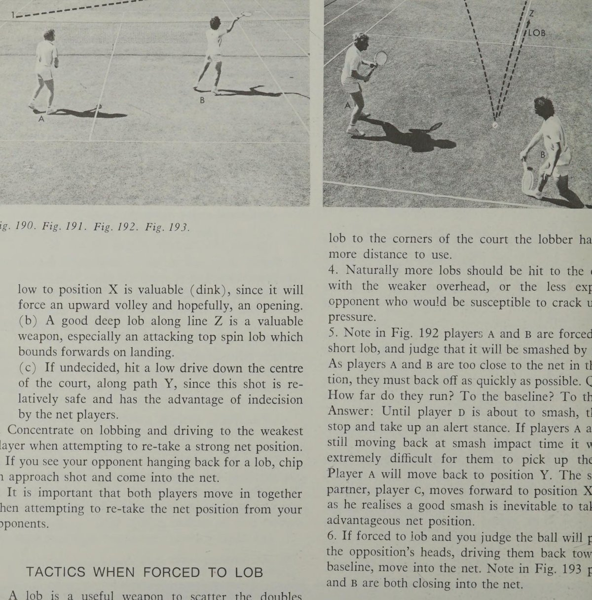
🤝 Chương 7: Chiến thuật đánh đôi nam nữ hỗn hợp (Mixed Doubles Tactics)
1. Nguyên tắc tổ chức đội hình trong đánh đôi nam nữ
Trong đánh đôi nam nữ hỗn hợp, thông thường tay vợt nam sẽ đảm nhận phần sân bên trái (Ad court) để phát huy tối đa cú thuận tay uy lực bao quát trung lộ, trong khi tay vợt nữ đảm nhận phần sân bên phải (Deuce court).
Người nam có trách nhiệm bao quát khoảng 60% đến 70% diện tích sân, đặc biệt là những quả bóng bổng lốp qua đầu người nữ. Tuy nhiên, sự tôn trọng và khích lệ tinh thần đồng đội nữ là yếu tố tiên quyết để duy trì sự gắn kết và hiệu quả chiến thuật.
🏆 Chương 8: Bài học cơ sinh học từ các nhà vô địch vĩ đại (What We Can Learn from the Champions)
1. Ken Rosewall: Kiệt tác cú cắt trái tay (The Sliced Backhand Drive)
Bức ảnh kinh điển của Ken Rosewall minh chứng cho cú cắt trái tay hoàn hảo nhất lịch sử quần vợt: Trọng tâm cơ thể chuyển dịch hoàn toàn qua chân trước, vai xoay vuông góc tuyệt đối với hướng bóng, cánh tay duỗi thẳng tắp và mặt vợt chém lướt qua dưới quả bóng với cổ tay khóa chặt như một khối thép duy nhất.
Đường bóng của Rosewall bay là là mép lưới chỉ vài milimet và trượt chuội sát mặt cỏ, biến cú đánh phòng thủ thành một đòn tấn công áp đảo không thể giải mã.
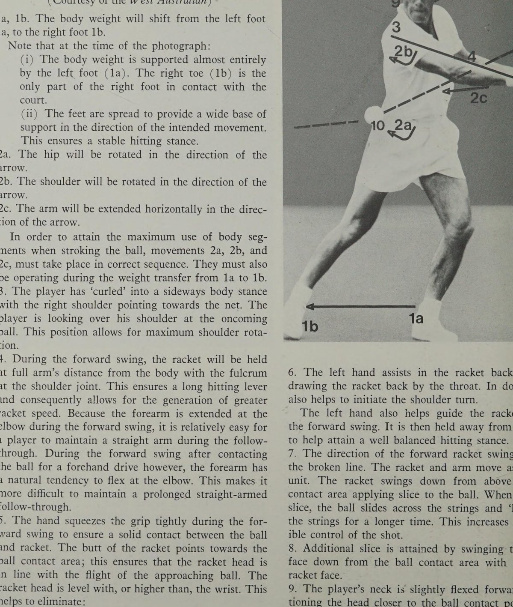
2. Evonne Goolagong: Cú giao bóng một phẳng với nhịp điệu thanh thoát
Evonne Goolagong thể hiện tư thế tiếp xúc bóng mẫu mực của cú giao bóng phẳng: Chân trái đạp mạnh đẩy cơ thể bật cao lên không trung, vai phải vươn thẳng đứng tới độ cao tối đa, mắt dán chặt vào tiếp điểm. Sự thanh thoát và nhịp điệu hoàn hảo cho phép bà tạo ra tốc độ bóng khủng khiếp mà không cần gồng cứng cơ bắp.
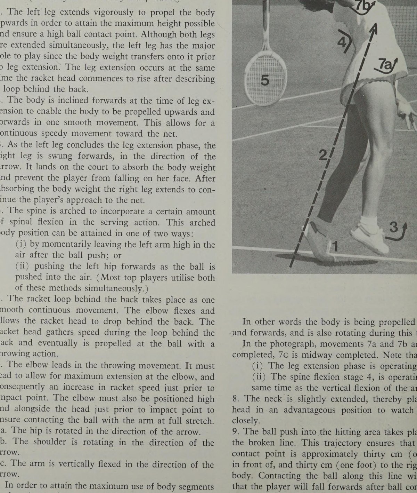
3. Margaret Court: Nghệ thuật khuỵu gối xử lý vô-lê thấp và đờ-mi vô-lê
Bức ảnh của huyền thoại Margaret Court (người nắm giữ kỷ lục 24 danh hiệu Grand Slam đơn) là bài học mẫu mực cho mọi thế hệ: Khi đón bắt quả vô-lê thấp dưới tầm lưới, bà không hề hạ chúc đầu vợt xuống; thay vào đó, cả hai đầu gối khuỵu sâu sát mặt đất, đưa mắt và thân người ngang tầm quả bóng.
Ở cú đờ-mi vô-lê (half-volley), vị trí đặt chân trước sát điểm bóng nảy cho phép bà chặn bóng ngay khoảnh khắc bóng vừa nhú lên khỏi mặt cỏ, triệt tiêu hoàn toàn góc nảy của bóng.
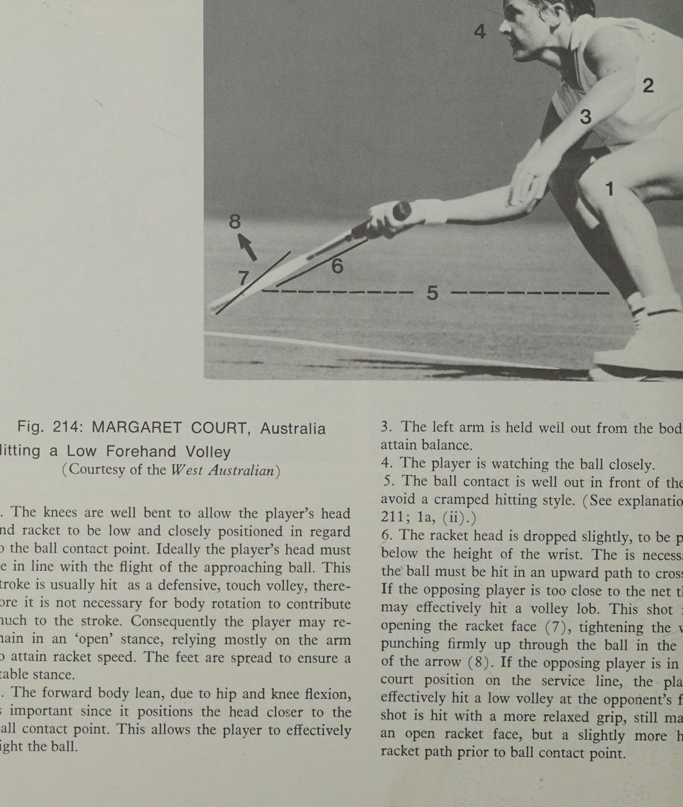
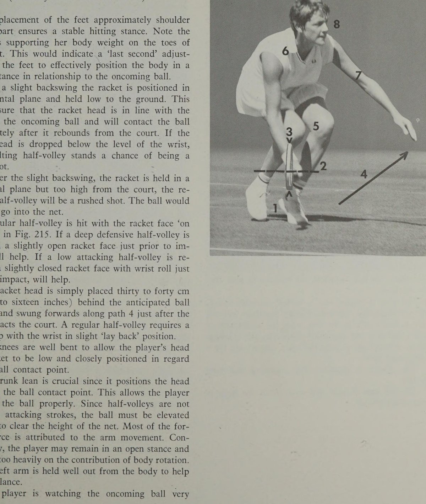
4. Tony Roche: Nghệ thuật bỏ nhỏ ngụy trang tinh tế
Tony Roche thị phạm cú bỏ nhỏ thuận tay bằng cách giữ tư thế mở đà hoàn toàn giống một cú đánh bóng bạt uy lực. Đến phần nghìn giây cuối cùng, các ngón tay nới lỏng nhẹ để hãm toàn bộ xung lực bóng, chém nhẹ tạo xoáy lùi đưa quả bóng rơi êm ái ngay sát mép lưới.
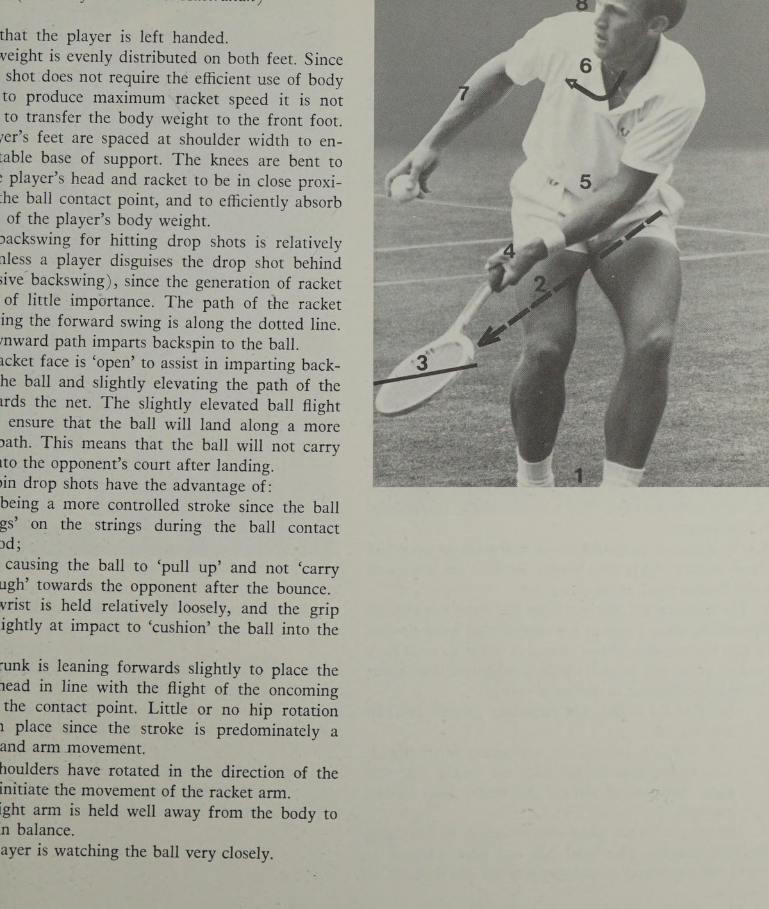
5. Alex Metreveli: Cú smash trái tay và lốp bóng phòng thủ giải vây
Alex Metreveli (ngôi sao Liên Xô từng vào chung kết Wimbledon) minh chứng cho kỹ thuật smash trái tay đỉnh cao: Xoay lưng về phía lưới, vươn thẳng tay lên đón bóng trên đỉnh đầu. Đồng thời, cú lốp bóng trái tay phòng thủ với trọng tâm lùi sâu giúp giải tỏa toàn bộ áp lực khi bị đối phương dồn ép nghẹt thở.
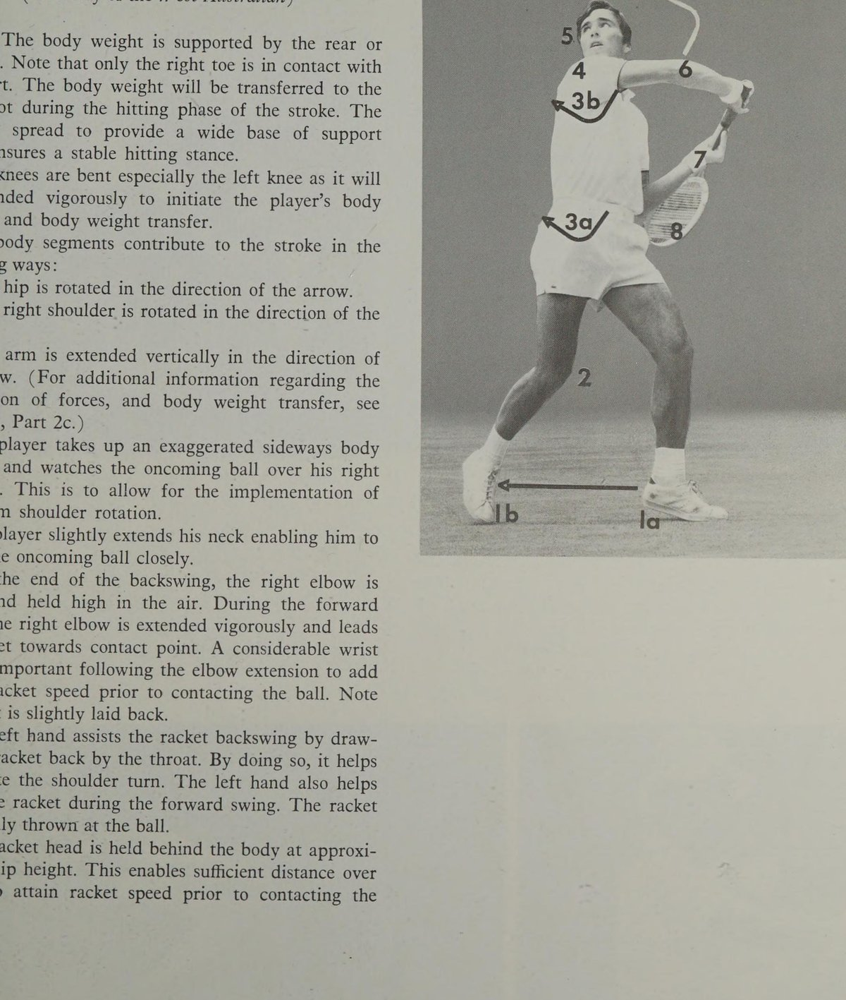
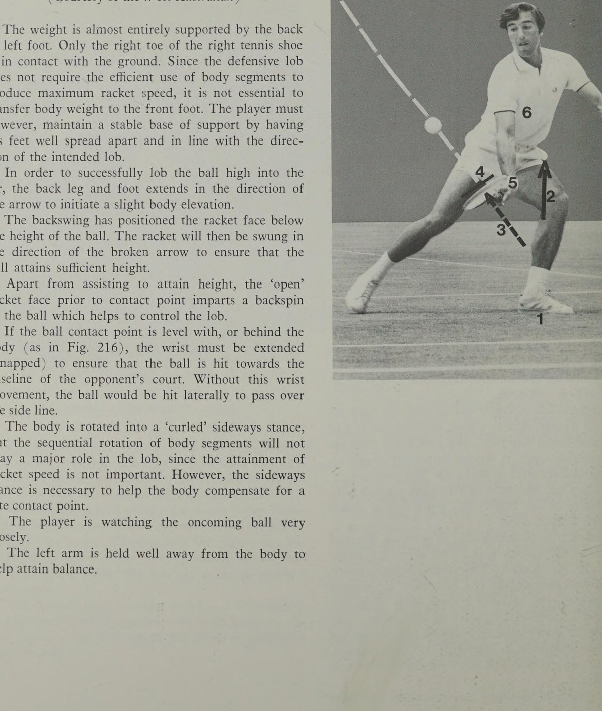
Thư viện ảnh: Thêm những khoảnh khắc kỹ thuật mẫu mực khác
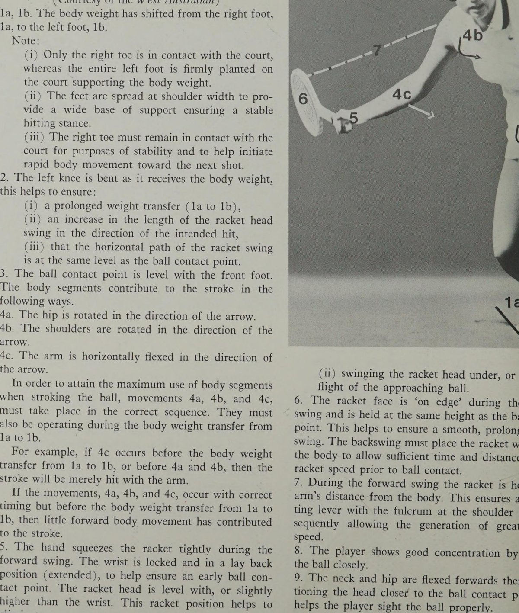
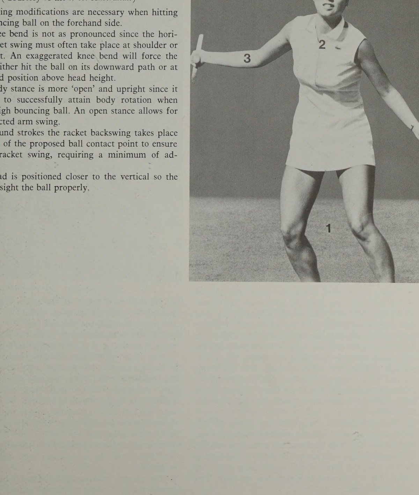
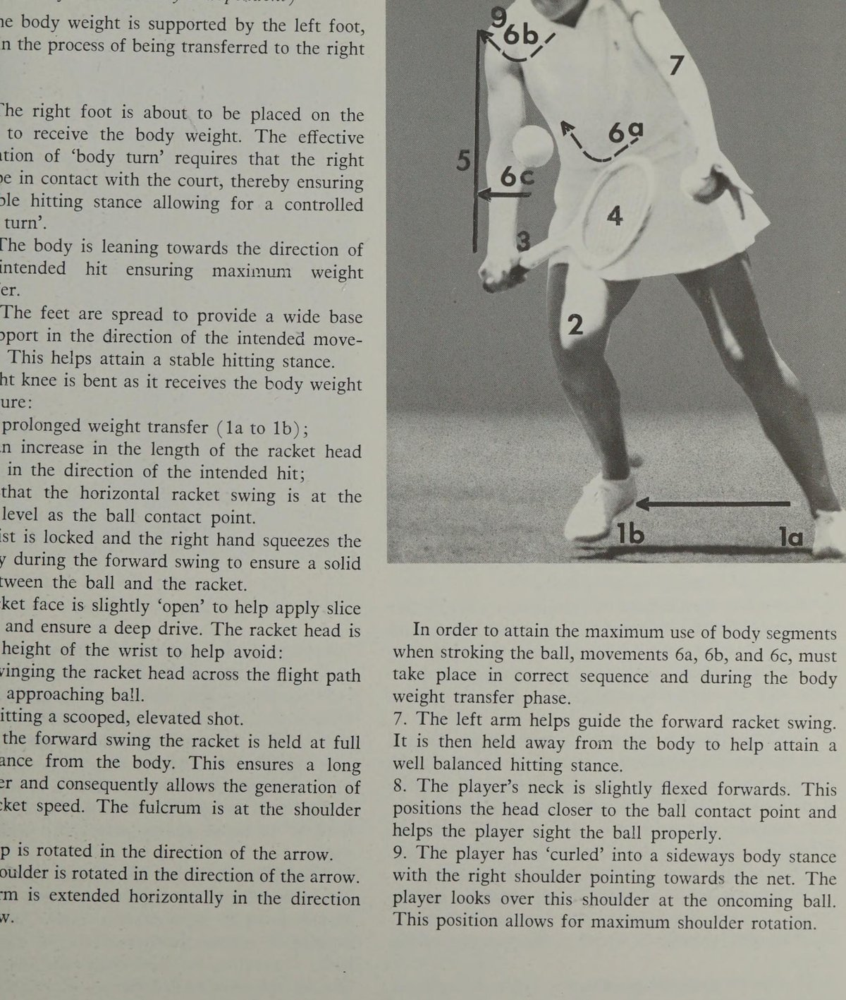
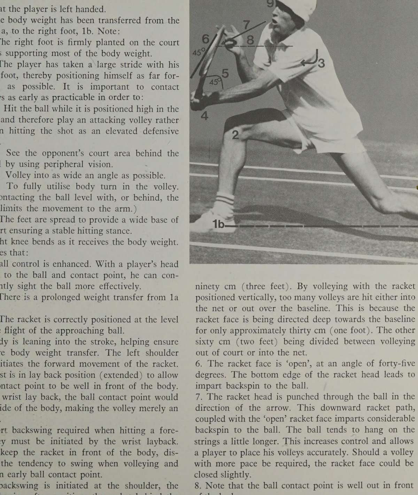
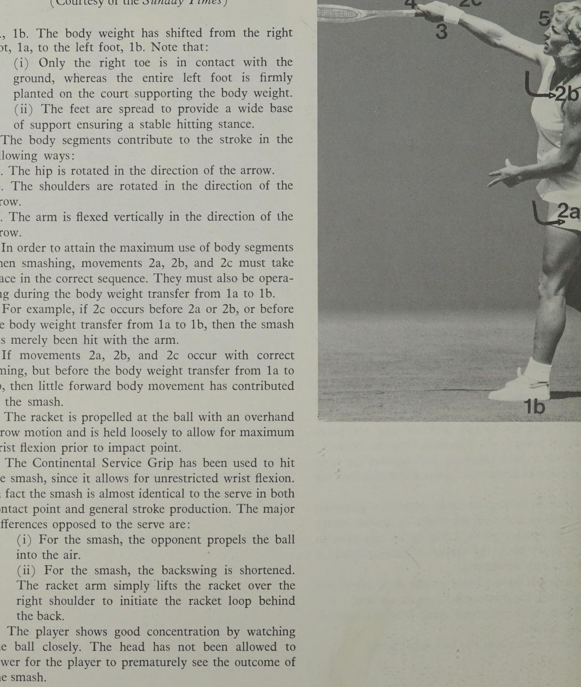
📚 Bảng thuật ngữ cơ sinh học và chiến thuật quần vợt (Glossary)
Ace
Cú giao bóng ăn điểm trực tiếp mà đối phương không thể chạm vợt vào bóng.
Biomechanics (Cơ sinh học)
Khoa học nghiên cứu các lực cơ học tác động lên cơ thể con người và chuyển động của cơ thể trong thể thao.
Kinetic Chain (Chuỗi động học)
Sự phối hợp liên hoàn của các nhóm cơ từ bàn chân, đầu gối, hông, thân trên, cánh tay và cổ tay để khuếch đại lực đánh.
Magnus Effect (Hiệu ứng Magnus)
Hiện tượng khí động học tạo ra lực nâng hoặc lực ép làm bẻ cong quỹ đạo bay của quả bóng khi bóng xoay tròn trong không khí.
Poaching (Vồ lưới)
Hành động di chuyển cắt mặt bất ngờ của tay vợt đứng lưới trong đánh đôi để chặn bắt quả bóng trả giao bóng của đối phương.
Half-Volley (Đờ-mi vô-lê)
Cú đánh chạm bóng ngay tức khắc sau khi bóng vừa chạm đất nảy lên (khi bóng mới nảy được vài centimet).
Center Theory (Thuyết trung lộ)
Chiến thuật đánh bóng sâu vào chính giữa vạch cuối sân của đối thủ nhằm triệt tiêu góc mở sân nguy hiểm của họ.